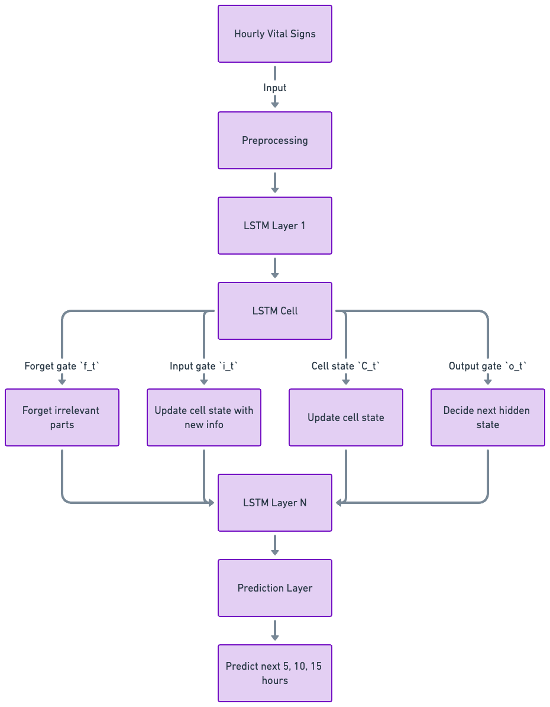

Sepsis is a critical and common condition in Intensive Care Units (ICU). While most sepsis cases (~80 percent) develop in the community and are present on arrival, the mortality rate for sepsis that develops while a patient is admitted, or is not present on arrival, is notably higher. One of the keys to sepsis treatment and survival lies in recognition and timely intervention/antibiotics.
Sepsis, a life-threatening response to infection leading to systemic inflammation and organ failure, has been a medical challenge for centuries. The term "sepsis" is derived from the Greek word σῆψις, meaning decay or putrefaction, indicating the disease's destructive nature. The earliest recorded observations of sepsis date back to the writings of Hippocrates (circa 460–370 BC), who described the process of wound putrefaction and the systemic illness that followed. However, the pathophysiological understanding of sepsis remained rudimentary, with many misconceptions persisting for millennia.
Today's hospitals use advanced clinical criteria, laboratory testing, and technology to detect sepsis early. The implementation of SOFA and qSOFA scores aids in rapid assessment, while biomarkers like Procalcitonin and C-reactive protein provide key diagnostic insights. Point-of-care testing technologies enable bedside diagnostics, offering quicker intervention possibilities. Electronic Health Record (EHR) systems with integrated sepsis detection algorithms play a crucial role in identifying sepsis signs early, and antimicrobial stewardship programs ensure effective and responsible use of antibiotics to treat sepsis.
The evolution from historical misconceptions to current evidence-based practices highlights the significant strides made in sepsis detection and management, emphasizing the critical role of early detection and timely, appropriate treatment in improving patient outcomes.
source: https://www.ebmedicine.net/topics/infectious-disease/sepsis-septic-shock
Machine learning (ML) has emerged as a transformative force in medical diagnostics, offering unprecedented predictive power and diagnostic accuracy. By analyzing vast datasets, ML algorithms can identify patterns and correlations that elude human detection, facilitating early diagnosis and personalized treatment plans. In sepsis detection, ML models leverage electronic health records to predict sepsis onset hours before clinical symptoms manifest, significantly improving patient outcomes through timely intervention. This section highlights several ML models, including decision trees, support vector machines, and neural networks, showcasing their potential in advancing medical research and patient care.
The Long Short-Term Memory (LSTM) model is a type of recurrent neural network (RNN) architecture that is specifically designed to address the challenge of learning long-term dependencies in data sequences. Unlike standard RNNs, which struggle with the vanishing gradient problem, LSTMs incorporate a series of gates—namely, the input, output, and forget gates—that regulate the flow of information. These gates effectively allow the model to decide which information is important to retain or discard over long sequences, making LSTMs particularly adept at processing and predicting outcomes based on time-series data.
LSTMs are highly suitable for sepsis prediction due to their ability to recognize complex patterns in time-series data, such as the physiological signals and laboratory results collected from patients over time. Sepsis detection often requires the analysis of subtle changes in vital signs, lab test results, and other clinical parameters that may signify the onset of sepsis before it becomes clinically apparent. The LSTM's architecture enables it to capture these early warning signs by learning from sequences of data where timing and the order of events are crucial. By leveraging LSTM models, healthcare providers can potentially identify the risk of sepsis earlier than traditional methods, allowing for timely intervention and improved patient outcomes. This capability makes LSTM an invaluable tool in the advancement of predictive healthcare analytics, particularly in critical care settings where early detection of sepsis can significantly affect treatment success and survival rates.
